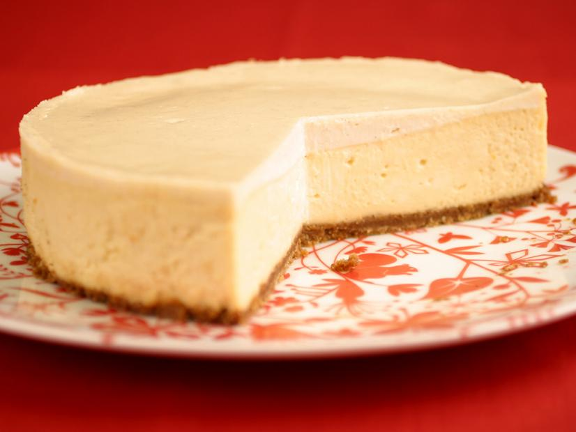

Classic Cheesecake

Description
This is a classic cheesecake -- velvety, rich, sweet and so satisfying. We are major fans of a thin sour cream cap on top of cheesecakes; it's the perfect balance to this rich cake.
Ingredients
Crust
- 6 tablespoons unsalted butter
- 1.5 cups graham cracker crumbs
- 2 tablespoons granulated sugar
- Pinch fine salt
Filling
- 2 pounds cream cheese, room temperature
- 1.25 cups granulated sugar
- 1.25 cups sour cream
- 6 large eggs, lightly beaten
- 1 tablespoon vanilla paste or extract
- 1 teaspoon finely grated lemon zest
- 1 teaspoon finely grated orange zest
Topping
- 0.75 cup sour cream
- 0.5 cup confectioners' sugar
- 0.25 teaspoon vanilla paste or extract
- Berries, optional
Steps
- Position a rack in the middle of the oven and preheat to 325 degrees F.
- For the crust: Melt the butter, covered in the microwave, in a medium microwave-safe bowl, or a saucepan. Brush a 9-inch springform pan with some of the butter. Stir the remaining butter together with the crumbs, sugar, and salt. Press the crumb mixture over the bottom of the pan, taking care to get the crust evenly into the edges. Bake until golden brown, 15 to 18 minutes. Cool. Wrap the bottom and up the sides of the pan with foil and put in a roasting pan.
- For the filling: Beat the cream cheese on medium speed with a hand-held mixer until smooth. Add the granulated sugar and beat just until light and fluffy, scraping the sides of the bowl and beaters as needed. Slowly beat in the sour cream, then eggs, vanilla and both citrus zests; take care not to over whip. Pour into the cooled crust.
- Bring a medium saucepan or kettle of water to a boil. Gently place the roasting pan in the oven (don't pull the rack out of the oven). Pour in enough hot water to come about halfway up the side of the springform pan. Bake the cheesecake for about 1 hour and 10 minutes---the outside of the cake will set but the center will still be loose.
- For the topping: Stir together the sour cream, confectioners' sugar and vanilla. Spread over the top of the cooked cheesecake and return to the oven for 5 minutes. Turn the oven off, cook the cheesecake in the residual heat in the oven for about 1 hour. This gentle finish minimizes the risk of the dreaded crack in your cheesecake.
- Remove cheesecake from the roasting pan to a rack. Run a knife around the edges and cool to room temperature. Cover and refrigerate at least 8 hours or overnight.
- Bring cheesecake to room temperature 30 minutes before serving. Remove the springform ring. Dip a knife in warm water, wipe dry before slicing each piece. Serve with berries, if desired.